phononNum
The phononNum class simulates phonon dynamics numerically on a 1D sample structure.
Copyright (c) 2013, Daniel Schick, André Bojahr, Marc Herzog, Roman Shayduk, Clemens von Korff Schmising All rights reserved.
License: BSD (use/copy/change/redistribute on own risk, mention the authors)
Contents
Classdef
Each phononNum instance and all inherited class objects are inherted from the phonon class which follows handle semantics. Hence a copy of such object will not copy the object itself, but only a handle to that object.
classdef phononNum < phonon
Properties
properties (SetAccess=public,GetAccess=public)
odeOptions = struct(); % struct with options for the ode solver, see odeset.
end%properties
Methods
methods
Constructor
Is executed each time an instance of this class is created. Only the structure input is obligatory.
function obj = phononNum(structure,varargin) obj = obj@phonon(structure,varargin{:}); % set default ode options after initialization of parent class obj.odeOptions.OutputFcn = @obj.odeProgressBar; end%function
Display
This method is called to display informations of the instance.
function disp(obj) disp('Numerical phonon simulation properties:'); disp('ode options:'); disp(obj.odeOptions); % call the parent display method disp@phonon(obj); end%function
getStrainMap
Returns a strainMap for the sample structure. If no strainMap is saved it is caluclated.
function [strainMap, sticksSubSystems, velocities] = getStrainMap(obj,time,tempMap,deltaTempMap) % create a unique hash hash = obj.getHash(time,tempMap,deltaTempMap); % create the file name to look for filename = fullfile(obj.cacheDir, ['strainMapNum_' hash '.mat']); if exist(filename,'file') && ~obj.forceRecalc % file exists so load it load(filename); obj.dispMessage(['_strainMap_ loaded from file ' filename]); else % file does not exist so calculate and save [strainMap, sticksSubSystems, velocities] = obj.calcStrainMap(time,tempMap,deltaTempMap); save(filename, 'strainMap', 'sticksSubSystems', 'velocities'); obj.dispMessage(['_strainMap_ saved to file ' filename]); end%if end%function
calcStrainMap
Calculates the strainMap of the sample structure for a given tempMap and deltaTempMap and time vector. Further details are given in Ref. [1]. We solve the coupled differential equations for each oscillator in a linear chain of masses and spring:
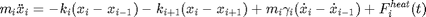
where 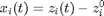 is the shift of each unit cell. 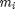 is the mass and 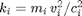 is the spring constant of each unit cell. Furthermore we introduce an empirical damping term 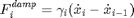 and the external force (thermal stress)  . The thermal stresses are modelled as spacer sticks which are calculated from the linear thermal expansion coefficients. The equation of motion can be reformulated as:
. The thermal stresses are modelled as spacer sticks which are calculated from the linear thermal expansion coefficients. The equation of motion can be reformulated as:
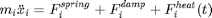
The numerical solution also allows for non-harmonic inter-atomic potentials of up to the order 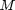. Accordingly 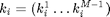 can be a vector accounting for higher orders of the potential which is in the harmonic case purely quadratic (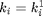). The resulting force from the displacement of the springs
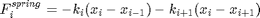
includes:
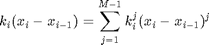
function [strainMap, sticksSubSystems, velocities] = calcStrainMap(obj,time,tempMap,deltaTempMap) tic % initialize N = obj.S.getNumberOfUnitCells; % nb of unit cells cAxises = obj.S.getUnitCellPropertyVector('cAxis'); x0 = zeros(2*N,1); % initial condition for the shift of the unit cells % check tempMaps [tempMap, deltaTempMap] = obj.checkTempMaps(tempMap,deltaTempMap,time); % calculate the sticks due to heat expansion first for all time % steps obj.dispMessage('Calculating linear thermal expansion ...'); [sticks, sticksSubSystems] = obj.calcSticksFromTempMap(tempMap,deltaTempMap); if obj.onlyheat % no coherent dynamics so calculate the strain directly strainMap = sticks./repmat(cAxises',size(sticks,1),1); velocities = zeros(size(strainMap)); % this is quasi-static else % include coherent dynamics obj.dispMessage('Calculating coherent dynamics with ODE solver ...') % define the ode which has to be solved (t- and x-grid) odefunc = @(t,X) obj.odeFunc(t,X,time,sticks); % apply MATLAB's ode-solver and input also temporal grid % (time) on which the result is extrapolated to and the % initial conditions x0 and the odeOptions [~,X] = ode23(odefunc,time,x0,odeset(obj.odeOptions)); % calculate the strainMap as the second spacial derivative % of the unit cell shift x(t). The result of the ode solver % contains x(t) = X(:,1:N) and v(t) = X(:,N+1:end) the % positions and velocities of the unit cells, respectively. temp = diff(X(:,1:N),1,2); temp(:,end+1) = 0; strainMap = temp./repmat(cAxises',size(temp,1),1); velocities = X(:,N+1:end); end%if obj.dispMessage('Elapsed time for _strainMap_:',toc); end%function
odeFunc
Provides the according ode function for the ode solver which has to be solved. The ode function has the input 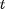 and 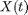 and calculates the temporal derivative 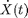 where the vector
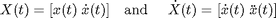
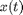 is the actual shift of each unit cell. Further inputs are the actual time gride time and the sticks from the linear thermal expansion.
function Xprime = odeFunc(obj,t,X,time,sticks) persistent forceFromHeat masses N; if isempty(forceFromHeat) % calculate the external force according to the spacer % sticks in advance forceFromHeat = obj.calcFromForceHeat(sticks); masses = obj.S.getUnitCellPropertyVector('mass'); N = obj.S.getNumberOfUnitCells; % nb of unit cells end%if x = X(1:N); v = X(N+1:end); % the output must be a column vector Xprime = zeros(2*N,1); % accelerations = derivative of velocities Xprime(N+1:end) = ... (obj.calcForceFromDamping(v) ... + obj.calcForceFromSpring([diff(x);0],[0;diff(x)])... + forceFromHeat(:,finderb(t,time)))./masses; % velocities = derivative of positions Xprime(1:N) = v; end%function
calcFromForceHeat
Calculates the force acting on each mass due to the heat expansion, which is modelled by spacer sticks.
function F = calcFromForceHeat(obj,sticks) [M N] = size(sticks); F = zeros(N,M); % traverse time for i = 1:M; F(:,i) = -obj.calcForceFromSpring([sticks(i,1:N-1)';0],[0;sticks(i,1:N-1)']); end%for end%function
calcForceFromSpring
Calculates the force 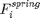 acting on each mass due to the displacement between the left and right site of that mass.
We introduce-higher order inter-atomic potentials by
where 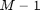 is the order of the spring constants
function F = calcForceFromSpring(obj,delX1,delX2) persistent springOrder coeff1 coeff2; if isempty(springOrder) springConsts = obj.S.getUnitCellPropertyVector('springConst'); springOrder = size(springConsts,2); coeff1 = [-springConsts(1:end-1,:); zeros(1,springOrder)]; coeff2 = [zeros(1,springOrder); -springConsts(1:end-1,:)]; end%if temp1 = zeros(length(delX1),springOrder); temp2 = zeros(length(delX1),springOrder); for i = 1:springOrder temp1(:,i) = delX1.^i; temp2(:,i) = delX2.^i; end%for F = sum(coeff2.*temp2,2)-sum(coeff1.*temp1,2); end%function
calcForceFromDamping
Calculates the force acting on each mass in a linear spring due to damping (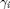) according to the shift velocity difference 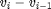 with 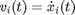:
function F = calcForceFromDamping(obj,v) persistent damping masses; if isempty(damping) damping = obj.S.getUnitCellPropertyVector('phononDamping'); masses = obj.S.getUnitCellPropertyVector('mass'); end%if F = masses.*damping.*[diff(v,1); 0]; end%function
end%methods
end%classdef
References
- A. Bojahr, M. Herzog, D. Schick, I. Vrejoiu, & M. Bargheer (2012). Calibrated real-time detection of nonlinearly propagating strain waves. Physical Review B, 86(14), 144306. doi:10.1103/PhysRevB.86.144306